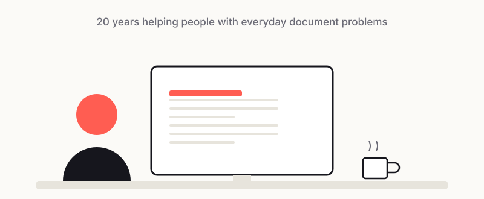

About PDFLoveMe

Hi, I'm Hill. I've spent the last 20 years working in IT support — the person people walk over to, or message at 5pm, when something on their screen just won't cooperate. PDFLoveMe is the small project that came out of all those years.
Why I built this
For two decades I've supported colleagues in a lot of different countries, on a lot of different machines, in a lot of different languages. And if there's one quiet, never-ending source of frustration I've watched people hit over and over, it's PDFs.
It's always the same handful of problems. A form that won't let someone type their own name. A file that's "too big to email" right before a deadline. A scanned contract nobody can search through. A document that needs a password before it goes out, except now the person can't open their own file a month later. None of these are dramatic. They're just small, repetitive, oddly stressful — and they land on the IT desk constantly.
After explaining the same fixes hundreds of times, I started thinking: most people don't need expensive software or a support ticket. They just need a simple tool that does the one thing they're stuck on, without making the whole afternoon disappear.
After enough of these — colleagues in Manila, Hong Kong, Japan, and Singapore, all in different places but stuck on the same handful of PDF problems — I realised I was running into plenty of the same snags myself. Rather than searching for a free tool from scratch every single time, it made more sense to build one place that quietly handles these everyday PDF jobs: something that helps my friends and colleagues, and honestly cuts down my own workload too. That's how PDFLoveMe started.
Why "files never leave your browser"
Here's the part I care about most. A lot of the PDFs people struggle with are personal or confidential — contracts, IDs, payslips, medical forms, financial statements. In IT support you become very aware of how casually sensitive documents get uploaded to random websites just to get one quick task done.
So I built PDFLoveMe to work differently. Every tool runs entirely in your browser. Your file is processed on your own device and never uploaded to a server. I'm not storing your documents, because they never reach me in the first place. For me that isn't a marketing line — it's the whole reason the site exists.
What you'll find here
A set of free, no-sign-up tools for the everyday jobs: merge, split, rotate, delete pages, JPG to PDF, PDF to JPG, encrypt, and compress. Alongside them, I write up the same plain-English answers I've given colleagues for years over on the blog — real problems, honest trade-offs, no fluff.
If this site saves you the ten minutes I used to spend walking someone through it in person, then it's doing its job. Thanks for stopping by.